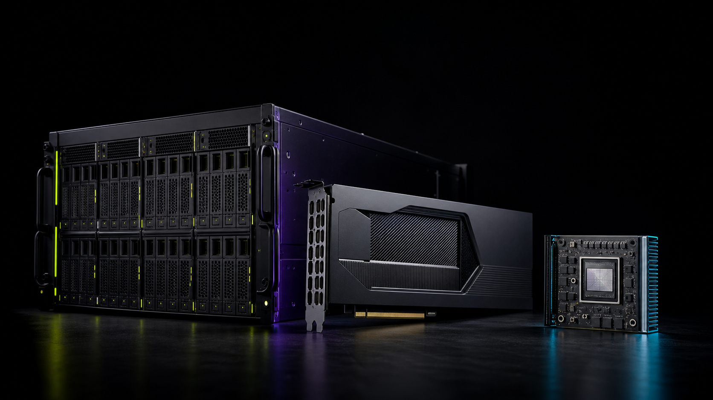

Unified compute model
Reuse model and operator work across deployment targets.
COMPUTE AT EVERY SCALE
GALAXY, NOVA, and SPARK share one open compute foundation.

DESIGN PERSPECTIVE
Reuse model and operator work across deployment targets.
Co-design compute, fabric, cooling, and operations around real workloads.
Start with validation, then expand to clusters and edge fleets.
Every engagement connects architecture, software, validation, and production operations.
ENGAGEMENT MODEL
FAQ
These pages describe product direction. Availability, specifications, and schedules will be confirmed in formal product materials.
It reduces repeated engineering when models move between deployment environments.
The planned path starts with development and validation before scaling to production.
Production infrastructure combining dense compute, high-bandwidth fabric, and unified operations.
A programmable platform for training, fine-tuning, and inference.
Low-power processors for robotics, vision, and real-time AI.
READY TO BUILD?